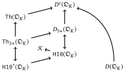

Hilbert’s tenth problem over rings of algebraic integers
Master Defence
Tim B. Herbstrith
28 February 2020
Hilbert’s tenth problem, Turing machines, and decidability
Hilbert’s tenth problem
Given a Diophantine equation with any number of unknown quantities and with rational integral numerical coefficients: To devise a process according to which it can be determined by a finite number of operations whether the equation is solvable in rational integers.
– Hilbert (1900)

Decision problems
Definition
A decision problem is a subset of the set of finite \mathtt 0-\mathtt 1-strings ω = \lbrace \mathtt{0, 1} \rbrace^* including the empty string \lambda.
Example: Simple graphs
The set of all simple graphs can be encoded by strings of the form
\begin{array}{lllll} x := & b_{1, 2} & b_{1, 3} & … & b_{1, n}\\ & & b_{2, 3} & … & b_{2,n}\\ & & & \ddots & \vdots \\ & & & & b_{n-1, n}, \end{array}
Turing machines
Definition
A Turing machine \mathbb{A} on the alphabet A = \lbrace\mathtt{\texttt{\S}, \_, 0, 1}\rbrace consists of
- a finite set of states S containing s_{start}, s_{halt} and
- a transition function
δ: S \times A \to S \times A \times \lbrace -1, 0, 1 \rbrace.
I write \mathbb{A}(x) for the output of Turing machine \mathbb{A} on input x ∈ ω if \mathbb{A} halts on x.
Computability, decidability, and semi-decidability
Definition
- A partial function f: ω \to ω is computable if there is a Turing machine \mathbb{A} with \mathbb{A}(x) = f(x) for all x in the domain of f.
- A decision problem is decidable if its characteristic function is computable.
- A decision problem Q is semi-decidable or computably enumerable if there is a Turing machine that returns \mathtt{1} on all members of Q.
Characterizations of semi-decidable sets
Proposition
Let Q \subseteq ω be a problem. The following are equivalent.
- Q is semi-decidable.
- Q is the range of a computable function.
- There exists a computable binary relation R on ω^2 such that x \in Q \Leftrightarrow \exists y : R(x, y)
The halting set
Definition
The halting set is the set of all codes of Turing machines \mathbb{A} that halt upon receiving their code as input i.e.
\mathcal{K} := \left\lbrace \ulcorner \mathbb{A} \urcorner \mid \mathbb{A} \text{ halts on } \ulcorner \mathbb{A} \urcorner \right\rbrace
Theorem
The halting set \mathcal{K} is semi-decidable but not decidable.
Some number theory
Algebraic integers
Definition
An element α \in ℂ is called algebraic integer if there exists a monic polynomial p \in ℤ[X] such that
p(α) = α^n + c_{n - 1} α^{n - 1} + … + c_0 = 0
- We write \mathcal{O}_{} for the set of all algebraic integers …
- … and if K is a number field, i.e. K is finite extension of ℚ, we set \mathcal{O}_{K}= \mathcal{O}_{} ∩ K.
Properties of algebraic integers
Proposition
- Both \mathcal{O}_{} and \mathcal{O}_{K} are sub-rings of ℂ (for all K).
- \mathcal{O}_{K} is a finitely generated free ℤ-module (for all K). A basis is called integral basis.
- The quotient field of \mathcal{O}_{K} is (isomorphic to) K.
Diophantine setsthe core of Hilbert’s problem
Diophantine Sets
Definition
Let R be a commutative ring with unit. A set S \subseteq R^n is called Diophantine if there exists a polynomial p \in R[{X}_1, \ldots, {X}_{n}, {Y}_1, \ldots, {Y}_{m}] such that
({α}_1, \ldots, {α}_{n}) \in S \Leftrightarrow \exists {y}_1, \ldots, {y}_{m} \in R^m : p({α}_1, \ldots, {α}_{n}, {y}_1, \ldots, {y}_{m}) = 0
Examples of Diophantine Sets
Let R be an integral domain. Then every finite set S \subset R is Diophantine.
Proof
Take
p(X) = \prod_{a ∈ S} (X - a).
Examples of Diophantine sets
The set of natural numbers ℕ is Diophantine over ℤ.
Proof
Using Minkowski’s theorem on convex bodies one can prove that
x ∈ ℕ \quad \Leftrightarrow \quad \exists y_1, y_2, y_3, y_4 \in ℤ: x = y_1^2 + y_2^2 + y_3^2 + y_4^2.
Examples of Diophantine sets
Let K be a number field and \mathcal{O}_{K} its ring of algebraic integers. Then \mathcal{O}_{K}\setminus \left\lbrace 0 \right\rbrace is Diophantine over \mathcal{O}_{K}.
Proof
Using the Chinese remainder theorem one can prove that
α ≠ 0 \quad ⇔ \quad ∃ β, γ ∈ \mathcal{O}_{K}: α β = (2 γ - 1)(3 γ - 1).
Unions and conjunctions of Diophantine sets are Diophantine
Lemma
If S_1 and S_2 are Diophantine over \mathcal{O}_{K}, so are
S_1 ∪ S_2 \quad \text{and} \quad S_1 ∩ S_2.
The resp. polynomial identities can be found effectively.
Hilbert’s tenth problem over algebraic integers
Fix a number field K. Hilbert’s tenth problem over \mathcal{O}_{K} can informally be stated as
H10: Does there exists an algorithm, deciding for every integer n > 0, every Diophantine set S ⊂ {\mathcal{O}_{K}}^n and every α ∈ {\mathcal{O}_{K}}^n, whether x ∈ S?
Which subsets of \mathcal{O}_{K} are Diophantine?
Model theory—towards a modern formulation of Hilbert’s problem
Alternative view of Diophantine sets
Definition
Let R be an at most countable commutative ring with unit.
- The language of rings with unity is \mathcal{L}_{ring} = \left\lbrace \mathtt{+, -, \cdot; 0, 1} \right\rbrace
- The R-language is \mathcal{L}_{R} = \mathcal{L}_{ring} ∪ \left\lbrace c_r \mid r ∈ R \right\rbrace.
Lemma
A set S \subseteq R^n is Diophantine over R iff
({α}_1, \ldots, {α}_{n}) ∈ S \quad ⇔ \quad \mathfrak{R} \models ∃ {y}_1, \ldots, {y}_{m}: ϕ({α}_1, \ldots, {α}_{n}, {y}_1, \ldots, {y}_{m})
holds for an atomic \mathcal{L}_{R}-formula ϕ.
Decidability of theories
Definition
Let \mathcal{L} be a language.
- An \mathcal{L}-theory is a set of \mathcal{L}-sentences.
- An \mathcal{L}-theory \mathtt{Th} is (semi-)decidable if the set of encodings \left\lbrace \ulcorner ϕ \urcorner \mid ϕ ∈ \mathtt{Th} \right\rbrace ⊂ ω is (semi-)decidable.
Important theories for deciding Hilbert’s tenth problem
Let \mathfrak{O}_K be the \mathcal{L}_{ring}-structure of \mathcal{O}_{K}.
| Quantifiers | Operators | Language | |
|---|---|---|---|
| purely Diophantine theory \mathtt{H10}^*(\mathfrak{O}_K) | ∃ | none | \mathcal{L}_{ring} |
| primitive positive theory \mathtt{Th}_{∃+}(\mathfrak{O}_K) | ∃ | ∧ | \mathcal{L}_{ring} |
| full theory \mathtt{Th}(\mathfrak{O}_K) | ∃, ∀ | ∧, ∨, ¬ | \mathcal{L}_{ring} |
| Diophantine theory \mathtt{H10}(\mathfrak{O}_K) | ∃ | none | \mathcal{L}_{R} |
| primitive positive diagram D_{∃+}(\mathfrak{O}_K) | ∃ | ∧ | \mathcal{L}_{R} |
| complete diagram D^c(\mathfrak{O}_K) | ∃, ∀ | ∧, ∨, ¬ | \mathcal{L}_{R} |
| atomic diagram D(\mathfrak{O}_K) | none | ¬ | \mathcal{L}_{R} |
Relationships of the theories

Hilbert’s tenth problem over algebraic integers
Fix a number field K. We restate Hilbert’s tenth problem over \mathcal{O}_{K} as
H10: Is the Diophantine theory \mathtt{H10}(\mathfrak{O}_K) decidable?
Hilbert’s tenth problem is semi-decidable
Remark
The atomic diagram D(\mathfrak{O}_K) is decidable by a theorem of Mal’cev (1961).
Hence, for every polynomial p ∈ \mathcal{O}_{K}[{X}_1, \ldots, {X}_{n}], the relation \mathfrak{p}({α}_1, \ldots, {α}_{n}) \; :⇔ \; p({α}_1, \ldots, {α}_{n}) = 0 is computable.
We conclude that \mathtt{H10}^*(\mathfrak{O}_K) and \mathtt{H10}(\mathfrak{O}_K) are semi-decidable.
m-reducibility and semi-decidable sets
Definition
A problem Q is many-one reducible to a second problem Q′ if there exists a total computable function f ∶ ω → ω such that x ∈ Q \quad ⇔ \quad f(x) ∈ Q'.
One writes Q ≤_m Q'.
Proposition
- Let Q, Q' \subseteq ω be problems such that Q ≤_m Q'. Then if Q' is semi-decidable, so is Q.
- If Q is semi-decidable, then Q ≤_m \mathcal{K}.
Relationships of the theories w.r.t many-one reducibility

What we know 1
Theorem (Gödel 1931; Rosser 1936)
The full theory \mathtt{Th}(ℕ) is undecidable.
Corollary
The full theory \mathtt{Th}(ℤ) is undecidable.
Theorem (Robinson 1959)
The full first order theories \mathtt{Th}(K) and \mathtt{Th}(\mathcal{O}_{K}) are undecidable for every number field K.
What we know 2
Theorem
The full theory \mathtt{Th}(ℂ) is decidable. Thus, \mathtt{H10}^*(ℂ) is decidable.
Theorem (Rumely 1986; van den Dries 1988)
The theories \mathtt{H10}(\mathcal{O}_{}) and D^c(\mathcal{O}_{}) are decidable.
What we know 3
DPRM theorem (Matijasevič 1970)
A subset of ℤ is semi-decidable if and only if it is Diophantine over ℤ.
Corollary
\mathtt{H10}(ℤ) is undecidable.
What we know 4
Theorem
\mathtt{H10}(\mathcal{O}_{K}) is undecidable if
- K is totally real (Denef 1980),
- K has exactly one pair of non-real embeddings (Pheidas 1988; Shlapentokh 1989),
- if K is a quadratic extension of a totally real number field (Denef and Lipshitz 1978), or
- if K is a subfield of a field with one of the properties above (Shapiro and Shlapentokh 1989).
What we would like to know
- Is \mathtt{H10}(\mathcal{O}_{K}) and \mathtt{H10}(K) undecidable for all number fields K?
- Especially: Is \mathtt{H10}(ℚ) decidable?
Computable rings and structural methods
Computable ring
Definition
- A ring R \subseteq ω is computable if R is decidable and all ring operations are computable.
- A ring R is computably presentable if R is isomorphic to a computable ring.
Examples of computably presentable rings
- ℤ is computably presentable.
- Using an integral basis, the ring of integers \mathcal{O}_{K} is computably presentable.
- If R is a computable integral domain then the ring of polynomials R[X_1, X_2, …] is computably presentable.
Connection to Hilbert’s tenth problem
Corollary
Let K be a number field. Then Hilbert’s tenth problem over \mathcal{O}_{K} is semi-decidable.
Proof
Let p ∈ \mathcal{O}_{K}{} [{X}_1, \ldots, {X}_{n}] be a polynomial. Interpret p: \mathcal{O}_{K}^n → \mathcal{O}_{K}, then p is computable.
Deciding whether p has roots in \mathcal{O}_{K} is equivalent to deciding
∃ {x}_1, \ldots, {x}_{n} : p({x}_1, \ldots, {x}_{n}) \doteq 0,
which is semi-decidable.
Going up
Lemma
Let L / K be an extension of algebraic number fields. If \mathtt{H10} is undecidable over \mathcal{O}_{K} and \mathcal{O}_{K} is Diophantine over \mathcal{O}_{L}, then \mathtt{H10} is undecidable over \mathcal{O}_{L}.
Proof
Assume otherwise and let p_K ∈ \mathcal{O}_{L}[X, Y] give a Diophantine definition of \mathcal{O}_{K} over \mathcal{O}_{L}.
If q ∈ \mathcal{O}_{K}{}[X_1, …, X_n], then q has a root in \mathcal{O}_{K} if and only if
∃ {x}_1, \ldots, {x}_{n} ∈ \mathcal{O}_{L} \; ∃ {y}_1, \ldots, {y}_{n} ∈ \mathcal{O}_{L} : q({x}_1, \ldots, {x}_{n}) = 0 ∧ \bigwedge_{i=1}^n p_K(x_i, y_i) = 0
A Diophantine definition of rational integers is key
Theorem
Every semi-decidable subset of \mathcal{O}_{K} is Diophantine if and only if ℤ is Diophantine over \mathcal{O}_{K}.
Strong vertical method of Denef and Lipshitz
Theorem
Let L /K be an extension of number fields and n = [L : ℚ]. If x, y ∈ \mathcal{O}_{L} and α ∈ \mathcal{O}_{K} satisfy
- y is not a unit,
- |σ_i(x)| ≤ |N_{L/ℚ}(y^c)| for all 1 ≤ i ≤ n,
- |σ_i(α)| ≤ |N_{L/ℚ}(y^c)| for all 1 ≤ i ≤ n, and
- x \equiv α \mathrel{\mathrm{mod}}\left(2 y^{2cn}\right) in \mathcal{O}_{L}
where {σ}_1, \ldots, {σ}_{n} denote the embeddings of L into ℂ and c ∈ ℕ is a fixed, then
x = α ∈ \mathcal{O}_{K}.
A Diophantine definition of rational integers over the integers of a totally real number field
Two sequences
Definition
Let K be totally real and a ∈ \mathcal{O}_{K}. We set
- δ(a) := \sqrt{a^2 - 1} and
- ε(a) := a + δ(a).
If δ(a) ∉ K, we define \mathrm x_m(a), \mathrm y_m(a) by
\mathrm x_m(a) + δ(a) \mathrm y_m(a) = ε(a)^m
View this as an analogue to
\cos(m) + i \sin(m) = e^{im}
Pell’s equation
X^2 - (a^2 - 1) Y^2 = 1
Lemma
(±\mathrm x_m(a), ±\mathrm y_m(a))_{m ∈ ℕ} are all solutions to Pell’s equation with parameter a in \mathcal{O}_{K}.
View this as an analogue to
\cos(m)^2 - i^2 \sin(m)^2 = 1
Notation
Let K be number field of degree n = [K : ℚ] and let {σ}_1, \ldots, {σ}_{n} denote all embeddings of K into ℂ. For all α ∈ K we set
α_i := σ_i(α) \quad\text{for all } 1 ≤ i ≤ n
Main Lemma
Let K ≠ ℚ be a totally real number field of degree n = [K : ℚ] and let a ∈ \mathcal{O}_{K} satisfy
a_1 ≥ 2^{2n}, \quad |a_i| ≤ \frac{1}{8} \text{ for all } 2 ≤ i ≤ n.
Define S \subseteq \mathcal{O}_{K} by ξ ∈ S ⇔ ∃ x, y, w, z, u, v, s, t, b ∈ \mathcal{O}_{K}:
\begin{aligned} x^2 - (a^2 - 1)y^2 &= 1\\ w^2 - (a^2 - 1)z^2 &= 1\\ u^2 - (a^2 - 1)v^2 &= 1\\ s^2 - (b^2 - 1)t^2 &= 1\\ v &≠ 0\\ z^2 & \mid v\\ \end{aligned}
\begin{aligned} b_1 &≥ 2^{2n}\\ |b_i| &≤ \frac{1}{2} \; \text{for } 2 ≤ i ≤ n\\ |u_i| &≥ \frac{1}{2} \; \text{for } 2 ≤ i ≤ n\\ |z_i| &≥ \frac{1}{2} \; \text{for } 2 ≤ i ≤ n\\ b &\equiv 1 \mathrel{\mathrm{mod}}(z)\\ \end{aligned}
\begin{aligned} b &\equiv a \mathrel{\mathrm{mod}}(u)\\ s &\equiv x \mathrel{\mathrm{mod}}(u)\\ t &\equiv ξ \mathrel{\mathrm{mod}}(z)\\ 2^{2n+1}& \prod_{i = 0}^{n - 1} (ξ + i)^n \prod_{j = 0}^{n - 1} (x + j)^n \;\big\vert\; z \end{aligned}
Then ℕ \subseteq S \subseteq ℤ.
Main Lemma
Let K ≠ ℚ be a totally real number field of degree n = [K : ℚ] and let a ∈ \mathcal{O}_{K} satisfy
a_1 ≥ 2^{2n}, \quad |a_i| ≤ \frac{1}{8} \text{ for all } 2 ≤ i ≤ n.
Define S \subseteq \mathcal{O}_{K} by ξ ∈ S ⇔ ∃ x, y, w, z, u, v, s, t, b ∈ \mathcal{O}_{K}:
\begin{aligned} x = ±\mathrm x_k(a), & \; y = ±\mathrm y_k(a)\\ w = ±\mathrm x_h(a), & \; z = ±\mathrm y_h(a)\\ u = ±\mathrm x_m(a), & \; v = ±\mathrm y_m(a)\\ s = ±\mathrm x_j(b), & \; t = ±\mathrm y_k(b)\\ v &≠ 0\\ z^2 & \mid v\\ \end{aligned}
\begin{aligned} b_1 &≥ 2^{2n}\\ |b_i| &≤ \frac{1}{2} \; \text{for } 2 ≤ i ≤ n\\ |u_i| &≥ \frac{1}{2} \; \text{for } 2 ≤ i ≤ n\\ |z_i| &≥ \frac{1}{2} \; \text{for } 2 ≤ i ≤ n\\ b &\equiv 1 \mathrel{\mathrm{mod}}(z)\\ \end{aligned}
\begin{aligned} b &\equiv a \mathrel{\mathrm{mod}}(u)\\ s &\equiv x \mathrel{\mathrm{mod}}(u)\\ t &\equiv ξ \mathrel{\mathrm{mod}}(z)\\ 2^{2n+1}& \prod_{i = 0}^{n - 1} (ξ + i)^n \prod_{j = 0}^{n - 1} (x + j)^n \;\big\vert\; z \end{aligned}
Then ℕ \subseteq S \subseteq ℤ.
Diophantine definition of the rational integers
Theorem (Denef 1980)
Let K be a totally real number field. Then ℤ is Diophantine over \mathcal{O}_{K}.
Use Minkowski’s theorem on convex bodies to find an a ∈ \mathcal{O}_{K} satisfying the estimates in the previous lemma.
Then ℕ \subseteq S \subseteq ℤ is Diophantine over \mathcal{O}_{K}, and \left\lbrace -1, 1 \right\rbrace is Diophantine as well. Now
α ∈ ℤ \quad ⇔ \quad ∃ s, ξ: α = s ξ ∧ (s - 1)(s + 1) = 0 ∧ ξ ∈ S
References
Denef, J. 1980. “Diophantine Sets over Algebraic Integer Rings. II.” Trans. Amer. Math. Soc. 257 (1): 227–36. https://doi.org/10.2307/1998133.
Denef, J., and L. Lipshitz. 1978. “Diophantine Sets over Some Rings of Algebraic Integers.” J. London Math. Soc. (2) 18 (3): 385–91. https://doi.org/10.1112/jlms/s2-18.3.385.
Gödel, Kurt. 1931. “Über Formal Unentscheidbare Sätze Der Principia Mathematica Und Verwandter Systeme I.” Monatsh. Math. Phys. 38 (1): 173–98. https://doi.org/10.1007/BF01700692.
Hilbert, David. 1900. “Mathematische Probleme. Vortrag, Gehalten Auf Dem Internationalen Mathematiker-Kongreß Zu Paris 1900.” Nachrichten von Der Königl. Gesellschaft Der Wissenschaften Zu Göttingen., 253–79.
Mal’cev, Anatoli I. 1961. “Constructive Algebras. I.” Uspehi Mat. Nauk 16 (3 (99)): 3–60.
Matijasevič, Ju. V. 1970. “The Diophantineness of Enumerable Sets.” Doklady Akademii Nauk SSSR 191: 279–82.
Pheidas, Thanases. 1988. “Hilbert’s Tenth Problem for a Class of Rings of Algebraic Integers.” Proc. Amer. Math. Soc. 104 (2): 611–20. https://doi.org/10.2307/2047021.
Reid, Constance, and Hermann Weyl. 1970. Hilbert. Springer Berlin Heidelberg. https://www.ebook.de/de/product/21827654/constance_reid_hermann_weyl_hilbert.html.
Robinson, Julia. 1959. “The Undecidability of Algebraic Rings and Fields.” Proc. Amer. Math. Soc. 10: 950–57. https://doi.org/10.2307/2033628.
Rosser, Barkley. 1936. “Extensions of Some Theorems of Gödel and Church.” Journal of Symbolic Logic 1 (3): 87–91. https://doi.org/10.2307/2269028.
Rumely, Robert S. 1986. “Arithmetic over the Ring of All Algebraic Integers.” J. Reine Angew. Math. 368: 127–33. https://doi.org/10.1515/crll.1986.368.127.
Shapiro, Harold N., and Alexandra Shlapentokh. 1989. “Diophantine Relationships Between Algebraic Number Fields.” Comm. Pure Appl. Math. 42 (8): 1113–22. https://doi.org/10.1002/cpa.3160420805.
Shlapentokh, Alexandra. 1989. “Extension of Hilbert’s Tenth Problem to Some Algebraic Number Fields.” Comm. Pure Appl. Math. 42 (7): 939–62. https://doi.org/10.1002/cpa.3160420703.
van den Dries, Lou. 1988. “Elimination Theory for the Ring of Algebraic Integers.” J. Reine Angew. Math. 388: 189–205. https://doi.org/10.1515/crll.1988.388.189.